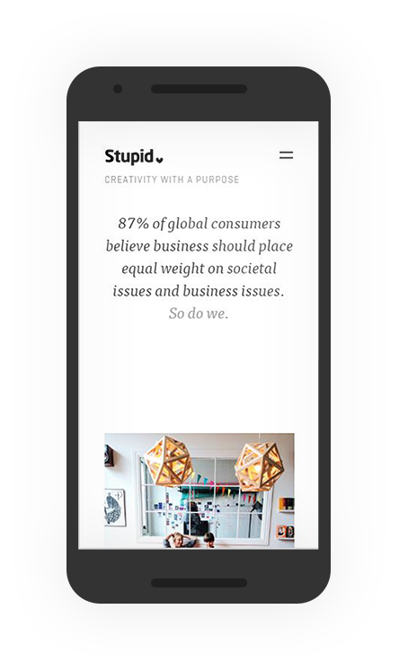

Contrast
stupid-studio
While they may call it “stupid’ this website is really nice. It is simple, modern and classy. The contrast is simply done. Bright photos with a white background, offering good contrast and really points out the images.
While they may call it “stupid’ this website is really nice. It is simple, modern and classy. The contrast is simply done. Bright photos with a white background, offering good contrast and really points out the images.